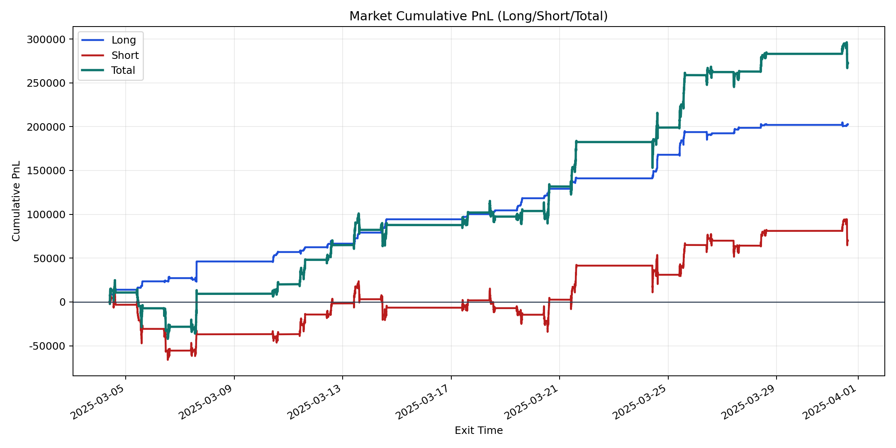
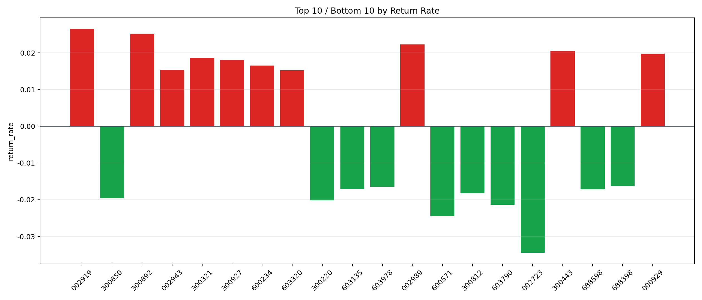

| repo_root | /home/haoranyou/data/output/alpha0.4_1w_5s_3ticks |
|---|---|
| period_months | 1 |
| period_label | 2025-03-04_to_2025-03-31 |
| start_time | 2025-03-04 09:50:17 |
| end_time | 2025-03-31 15:00:00 |
| n_trades | 85572 |
| n_symbols | 1505 |
| total_pnl | 272565.28794999927 |
| long_total_pnl | 202668.8642999998 |
| short_total_pnl | 69896.42364999946 |
| total_entry_notional | 797422583.0 |
| long_entry_notional | 106172587.0 |
| short_entry_notional | 691249996.0 |
| total_return_rate | 0.00034180783659847676 |
| long_return_rate | 0.001908862447705073 |
| short_return_rate | 0.000101115984165589 |
| top_symbols_by_return | ["002919", "300892", "002989", "300443", "000929", "300321", "300927", "600234", "002943", "603320"] |
| bottom_symbols_by_return | ["002723", "600571", "603790", "300220", "300850", "300812", "688598", "603135", "603978", "688398"] |

